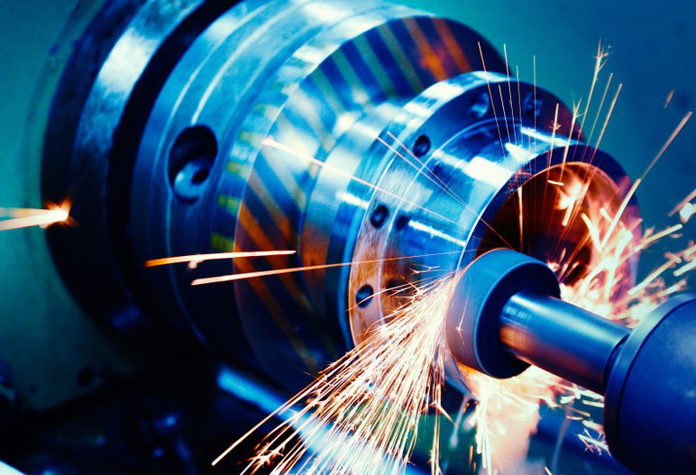

Ferramentas de Precisão
Ferramentas diamantadas
100x mais resistentes.
Tecnologia alemã em diamante policristalino (PCD) K10 virgem. 20+ anos desenvolvendo as melhores ferramentas para o setor madeireiro e moveleiro. Widia, PCD, Cabeçotes, Fresas e Maquinário especializado.
para sua indústria

A maior
da região
com tecnologia
de ponta.
A Artemax é especializada em ferramentas de corte com precisão para o setor madeireiro e de usinagem.
Com 20+ anos de experiência, produzimos ferramentas em Widia (metal duro) e PCD (diamante policristalino) utilizando matéria-prima K10 virgem com tecnologia de corte indiscutível.
Além da produção própria, comercializamos serras circulares, máquinas (Plaina, Destopadeira, Perfiladeira, Arqueadeira, Afiadeira de facas), EPIs e acessórios para o setor madeireiro e de usinagem.
O grupo Artemax está presente em Sinop e Aripuanã no Mato Grosso, e em Itajaí em Santa Catarina.
as melhores ferramentas
e máquinas
da indústria.
Produção própria e revenda de soluções completas


Soluções
técnicas
Produção de Ferramentas
Fabricamos cabeçotes, fresas e ferramentas em Widia e PCD (diamante policristalino) com matéria-prima K10 virgem e tecnologia alemã.
Repastilhamento
Serviço de repastilhamento de serras circulares e cabeçotes porta-faca em Widia. Devolve a precisão e desempenho original.
Ferramentas PCD:
A Escolha para Resultados
Diamante Policristalino K10 100% Virgem com tecnologia alemã. Produção própria com controle total de qualidade.
- 100x mais resistente que metal duro comum
- Menor desgaste = Menos paradas de máquina
- Melhor acabamento = Reduz retrabalhos
- Custo-benefício incomparável para produção em série
- Tecnologia alemã indiscutível em corte

Vamos
transformar
sua produção?
Fale com nossos especialistas. Temos a melhor solução em ferramentas PCD e Widia para seu processo.
Sinop
Rua Guarapuava, N 115
Jardim Terra Rica
Sinop, MT, Brasil 78557-549
Aripuanã
Avenida Osmar Demeneck, N 750
Parque Industrial Heleodoro Mazon
Aripuanã, MT, Brasil 78325-000